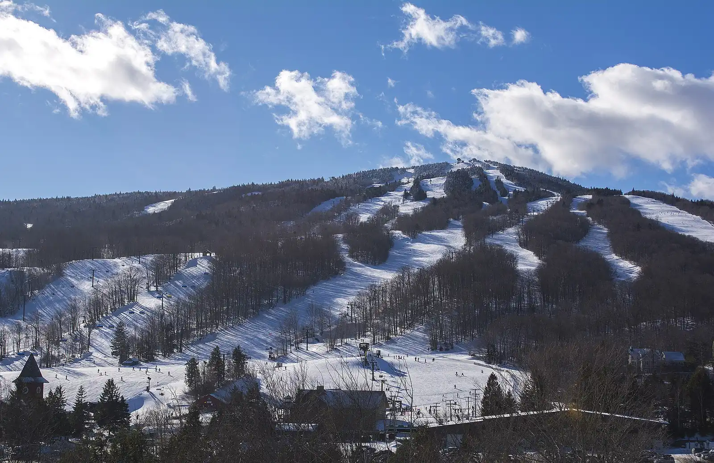

Mount Snow, West Dover, Vermont · Ski conditions
Mount Snow Conditions and Webcams Today
Mount Snow's webcams today, plus kid facts: lesson ages, childcare, parking and the free shuttle. About 4 hours' drive from New York City.
Researched with AI (Miles Rowan) · sources linked and dated · How we check
Mount Snow's own status
No lifts open on Nov 16Mount Snow's lift and terrain status page showed 0 of 19 lifts open and no opening date (read Nov 16).
Our webcam read
No cam read from us yet. Cam reads show here only when a recent one has passed a separate automated accuracy check.

Coming for the holidays? Christmas in New York City with kids, free and paid
Cam by cam
Mount Snow's 5 public cams, as named on its cam page (read Nov 14): Snow Stake, Mount Snow Summit, Mount Snow Somerset, Carinthia Cam, Mount Snow Main Base Area. Once our reads start, each cam's last read time shows here.
Plan the day with kids
- Opening day: Mount Snow's pages we read don't give a winter opening date yet; check its lift and terrain status before you drive.
- Lessons: Kids' group lessons are for ages 3 to 14; kids under 7 go in smaller groups by ability. Kids must be potty trained.
- Bring: A helmet for every child in a lesson: Mount Snow requires them. Full-day kids' group lessons include lunch when offered.
- Lift and rentals: Not included in lessons; add them at a discount when you book a group lesson. Epic Pass holders save 20% on group lessons.
- Childcare: Mount Snow Child Care takes 18 months to 4 years, Friday to Sunday plus Dec 26-31, 2026 and Feb 15-18, 2027 (the page omits the years; closed Christmas Day); reserve ahead. Drop-off 8:30 to 10 a.m., pick-up by 4:30 p.m.
- Parking: Free in Lot D, the Tiered Lots and Lot E (overflow on busy days); paid preferred parking sits closest to the slopes. A free MOOver shuttle runs to the Clocktower in the main base area.
Childcare prices on Mount Snow's page, read Nov 14:
- Full day childcare (18 months to 4 years): $199 a full day
- Half day childcare (ages 3 and 4, paired with a morning ski lesson): $135 a half day
Mount Snow's childcare page lists these rates without saying per child. Cancel more than 48 hours ahead for a full refund; later, a single-day booking costs 50%.
Lift tickets and lessons: We haven't read Mount Snow's ticket and lesson prices, so check live. See Mount Snow lift ticket FAQs.
From Mount Snow first-timer lessons, Mount Snow Child Care, Getting to Mount Snow and Mount Snow hours of operation, read Nov 14.
Getting there from New York City
- Car: about 4 hours from New York City (Mount Snow's estimate); the last stretch is 9 miles up Route 100 from Wilmington.
- Train or bus: Amtrak's Vermonter and Greyhound stop in Brattleboro; Mount Snow says round-trip shuttles are available on request, so ask before you book.
Closer hills for a day trip: skiing near New York City with kids.
If the snow is thin
- Snowmaking covers 83% of Mount Snow's terrain, by its own count.
- Snow tubing: Mount Snow's tubing page showed no hours or dates when we read it; call 1-800-842-8062.
- Weather and refunds: Mount Snow's policies page may cover them; we haven't read it, so check before you buy.
From Mount Snow mountain info and Mount Snow hours of operation, read Nov 14.
How we read the cams: a program looks at Mount Snow's public webcam pictures and notes only what a picture can show: fresh snow, snow cover, snowmaking, moving lifts, how busy the base looks, visibility and the snow stake. Each read shows its time; after 90 minutes it is marked older, after 6 hours it is hidden. We never say whether terrain is safe, icy, groomed or open; Mount Snow's own report decides that. We don't show the cam pictures or count people.
Sources: Mount Snow mountain cams · Mount Snow hours of operation · Mount Snow first-timer lessons · Mount Snow Child Care · Getting to Mount Snow · Mount Snow mountain info (read Nov 14). We haven't skied Mount Snow.